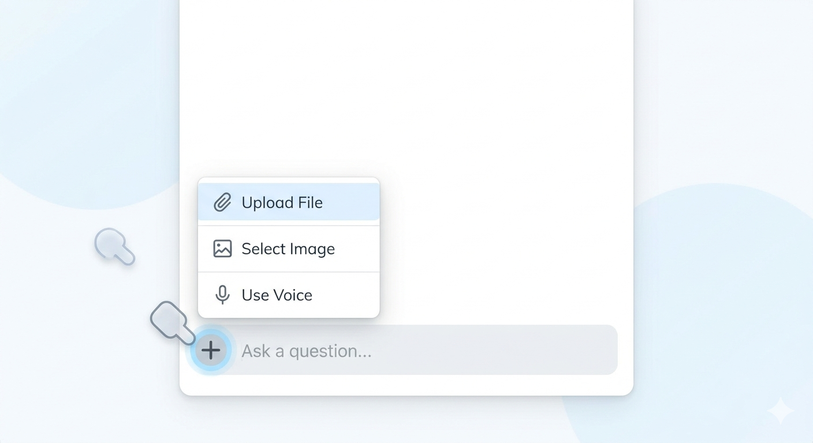

Click the link below to open the merged document, then save it to your computer.
Ctrl + S (or right-click and select "Save As").Command (⌘) + S (or Control + Click and select "Save Page As").Open your preferred AI tool. Click the "+" icon in the chat window and choose the HOADocs.txt file you saved in Step 1.

Once uploaded, you can ask questions like "What is the quorum requirement for a meeting?" or "What are the rules regarding fences?"
These documents are listed in order of legal authority:
All exterior changes require approval from the Architectural Review Board (ARB). This includes paint colors, roofing, and landscaping modifications.
Pets must be leashed at all times when in common areas. Owners are responsible for immediate waste removal.
A quorum is required for official business. Please refer to the Bylaws in the HOADocs.txt file for specific percentage requirements.